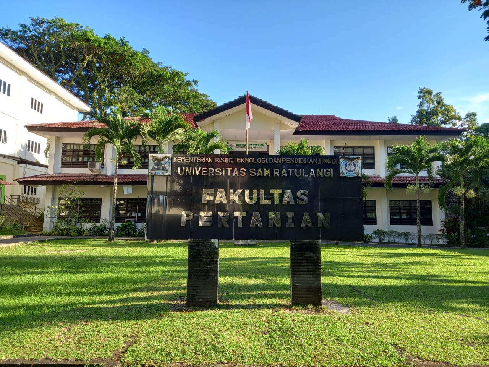

<section >
  <div class="panel-grid">
    <div class="panel-main">
      <h1>Selamat Datang di PlantDiag</h1>
      <p class="muted">Sistem pengenalan Penyakit pada Tanaman dan cara mendiagnosanya</p>

      <h3>Deskripsi Singkat</h3>
      <p>Website ini dibuat sebagai alat edukasi untuk mengenali gejala penyakit tanaman, menampilkan penyebab, keterangan, gambar, dan rekomendasi penanganan. Data penyakit akan diupgrade setiap kali ada riset tambahan.</p>
    </div>

    <aside class="panel-side">
    <table class="anggota-table">
      <tr>
        <td class="anggota-foto">
          
        </td>
      </tr>
    </table>
  </aside>

  </div>
</section>
